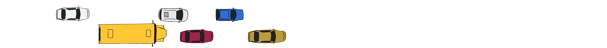
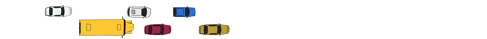
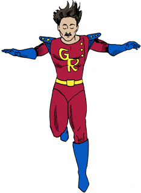

A super-quick, super-painless guide to the theory that conquered the universe.

scroll down
to begin
to begin
Sound On
For 100 years, the general theory of relativity has been a pillar of modern physics. The basic idea is so elegant that you don’t need superpowers to understand it.

Begin with Isaac Newton’s first law of motion: An object remains in uniform motion unless acted on by a force. That means if you feel no force you’ll either sit still or glide forever in a straight line at a constant speed.

 


But Albert Einstein asked himself ...
What happens if I step off a roof?



While I’m freefalling I feel weightless. I don’t feel any force, even as I accelerate toward the ground!
Einstein had landed inside a paradox. An object that feels no force should travel at a constant speed. But something accelerating because of gravity feels no force. Einstein realized that if he resolved the paradox, he might explain the origins of gravity.
This is the happiest thought in my life!
The solution:
gravity is

space & time!
Einstein realized that Massive things like Earth warp spacetime. A freefalling object then follows the straightest possible path in spacetime. So—even though that path doesn’t look straight to us—the object experiences no force.
“It works roughly like this. Follow me back to the roof. If we turn off gravity, I just float—tracing a straight line in this diagram.”
“Now turn gravity back on. Earth’s mass warps spacetime so that time on the ground ticks slower than time on the roof.”


“We have to stretch out the time axis nearer to the ground, so the diagram curves. Now a straight line takes me from the roof to the ground!”
Of course, saying that gravity is the warping of spacetime is a whole lot easier than turning that insight into a quantitative theory.
Einstein labored for years to explain mathematically exactly how the distribution of mass and energy warps spacetime.
Today, Einstein’s general relativity remains scientists’ best understanding of gravity and a key to our understanding of the cosmos on the grandest scale.